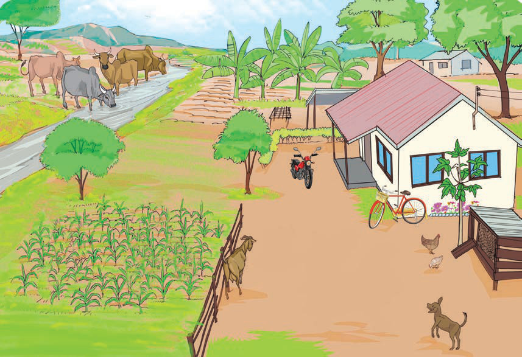

Questions
Study the following picture or listen to its description, then answer the questions that follow.

1.
Name the things observed in the picture.
2.
What do you like most in the picture or its description?
Why?
The environment is made up of living and non-living things. Living things include sheep, donkeys, elephants, zebras, antelopes, ducks, guineafowl, fish, maize plants, rice plants, orange plants, pineapple plants, watermelon plants, and neem plants. Non-living things include cars, houses, stones, desks, pencils, clothes, tables, and books.